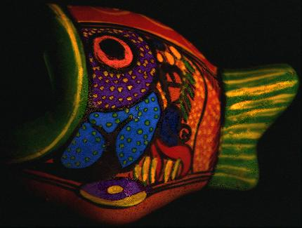
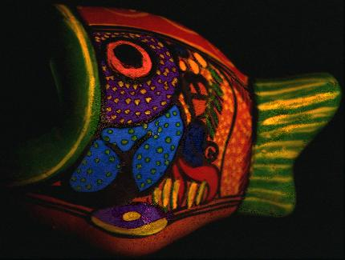

Robby T. Tan
Assistant Professor
Yale-NUS College
Also, Electrical and Computer Engineering, NUS
Home » Publication » Code » Teaching »
Assistant Professor
Yale-NUS College
Also, Electrical and Computer Engineering, NUS
All Publications
Bad Weather
Physics-based Vision
Motion Analysis
Human Pose
Below are selected papers in physics-based vision. For the complete publication list, see: all publications.


Waterdrop Stereo
Shaodi You, Robby T. Tan, Rei Kawakami, Y. Mukaigawa,
Katsushi Ikeuchi
arXiv 2016


Camera Spectral Sensitivity Estimation from Sky Images
Rei Kawakami, Hongxun Zhou, Robby T. Tan and Katsushi
Ikeuchi
IJCV 2013


Color Constancy Through Inverse-intensity Chromaticity Space
Robby T. Tan, K. Nishino, K. Ikeuchi
CVPR 2003 and JOSA A 2004
 

Highlight Removal for Complex Textured Surfaces
Robby T. Tan, Katsushi Ikeuchi
ICCV 2003, IEEE TPAMI 2004, and TPAMI 2005


Consistent Surface Color for Texturing Large Objects in Outdoor Scenes
Rei Kawakami, Robby T. Tan, Katsushi Ikeuchi
ICCV 2005, Beijing, China.


Polarization-based Inverse Rendering
Daisuke Miyazaki, Robby T. Tan, Kenji Hara, Katsushi Ikeuchi
ICCV, 2003, Nice, France.